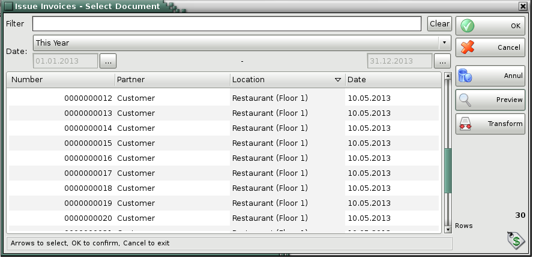
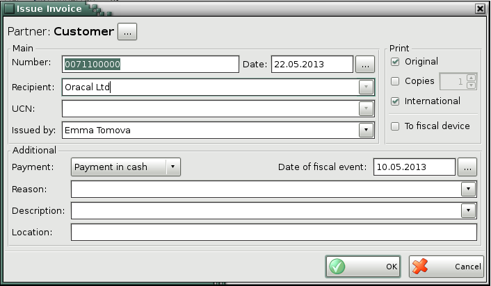

Issue invoices
You can use the Issue invoices window (click the  icon or press the F7 key to open it) to transform a selected sales
document into an invoice. The sequence is as follows:
icon or press the F7 key to open it) to transform a selected sales
document into an invoice. The sequence is as follows:
1. Create a
sales document (stock receipt);
2. Attach a new document to the first
one. The new document is the invoice.
The first document (stock receipt)
represents the incomes from the item and its writing-off. The second document is
a tax representation of the deal and determines the type of the official
document.
Generally, an invoice can be issued only based on an existing stock
receipt. The invoice and the stock receipt contain a list of the same items and
are for the same amount.

In the Issue invoices - Select document window select
the sales document, based on which the invoice will be issued.
The invoiced documents are coloured in red.

You can use the Issue invoice window to enter general
information in the issued invoice: document number, date of issuing, from date,
to invoice, recipient, recipient�s UCN, the name of the person issuing the
document. You can enter additional data as well: payment type (in cash, via bank
or via card), date of fiscal event, reason for the transaction, description
and location of the deal.
You can choose the number of print copies � originals and copies.
If To cash device is checked, the data will be sent to a cash
device and a cash register receipt will be printed.
The data of the issuer is automatically filled from the selected company.
�2006-2015 Microinvest,
All rights reserved